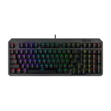
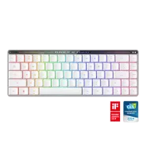
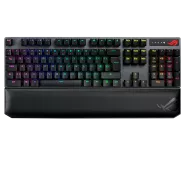
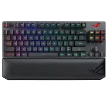
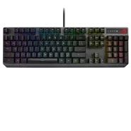
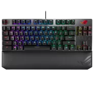

ASUS TUF Gaming K3 Gen II keyboard features optical-mechanical RGB switches and 100-million-keypress lifespan for ultimate durability.

ROG Falchion RX Low Profile 65% compact wireless gaming keyboard with ROG RX low-profile optical switches, tri-mode connection with ROG SpeedNova wireless technology and Omni Receiver, protective cover, integrated silicone dampening foam, interactive touch panel, and MacOS support

ROG Strix Scope NX RGB Wireless Deluxe gaming mechanical keyboard with tri-mode connectivity, ROG NX Red/ Blue/ Brown mechanical switches, PBT keycaps, aluminum frame, magnetic wrist rest & extended Ctrl key for FPS precision

ROG Strix Scope RX TKL Wireless Deluxe gaming keyboard for FPS gamers, with tri-mode connectivity, ROG RX Optical Mechanical Switches, wide Ctrl key, PBT keycaps, Aura Sync RGB, magnetic wrist rest, and alloy top plate.

ROG Strix Scope RX optical RGB gaming keyboard for FPS gamers, with ROG RX Optical Mechanical Switches, all-round Aura Sync RGB illumination, IP56 water and dust resistance, USB 2.0 passthrough, and alloy top plate

ROG Strix Scope TKL Deluxe wired mechanical RGB gaming keyboard for FPS games, with Cherry MX switches, aluminum frame, ergonomic wrist rest, and Aura Sync lighting